Mapa Electoral
Actualidad
Piezas cortas que cruzan la actualidad del día con los datos electorales por sección censal. Cada cifra, con su fuente. Para las piezas de fondo, el Atlas de las anomalías electorales.
Camino al 29N
- 9 de octubre de 2026 · EspañaLa huelga del 11N apela a los barrios que menos votan: donde más paro hay, la participación cae al 61%CCOO, UGT y el Sindicato de Inquilinas convocan la primera huelga general conjunta desde 2012 a 18 días de las generales. En julio de 2023, el 10% de secciones con más paro votó quince puntos menos que el 10% con menos paro. A igual renta, la distancia se mantiene.
- 9 de octubre de 2026 · MadridEn Madrid, el PSOE saca diez puntos más cuando se vota al Gobierno que cuando se vota al alcaldeLa bronca entre Ayuso y Más Madrid en la Asamblea vuelve a enfrentar a las dos fuerzas que dominan la política madrileña. En la ciudad de Madrid, el PSOE sacó el 16,8% en las municipales de mayo de 2023 y el 27,4% en las generales de julio. Fue más alto en las generales en todas las secciones menos una.
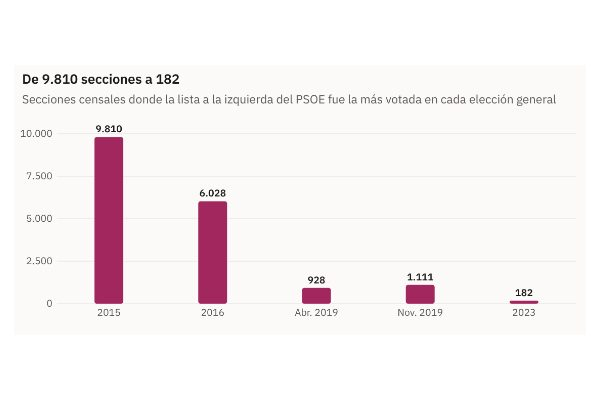
9 de octubre de 2026 · EspañaEl espacio a la izquierda del PSOE fue el más votado en 9.810 secciones en 2015; en 2023, en 182Podemos antepone sus primarias y se aleja del Frente Amplio. Antes de saber cuántas papeletas habrá a la izquierda del PSOE, los datos por sección muestran de dónde parte ese espacio: del 24,4% de 2015 al 12,3% de 2023, con caídas en todo tipo de municipios.- 9 de octubre de 2026 · EspañaVox saca casi lo mismo donde uno de cada tres vecinos nació fuera que donde casi nadie lo hizoLa inmigración a Euskadi bajó ligeramente en 2025, según los datos que publica esta semana la prensa vasca. Euskadi es también donde menos vota a Vox: el 2,6% en 2023. En el resto de España, el voto a Vox apenas cambia entre las secciones con menos del 5% y con más del 30% de población nacida en el extranjero.
- 8 de octubre de 2026 · GaliciaDel 12% al 2,9% y de vuelta al 9,5%: el nacionalismo gallego que deja BeirasEl BNG pasó del 12,0 % en Galicia en 2004 al 2,9 % en 2016, cuando En Marea sacó el 22,4 %, y en 2023 volvió al 9,5 %. Mapas por municipio y sección.
- 8 de octubre de 2026 · BarcelonaLa Barcelona que tendría que reconquistar Colau: los comuns ganaban en 837 secciones y ahora en 23En Comú Podem ganó en 837 de las 1.068 secciones de Barcelona en 2015 (26,7 %). En 2023, Sumar-En Comú Podem ganó en 23 (17,0 %). La caída fue mayor en los barrios de renta baja.
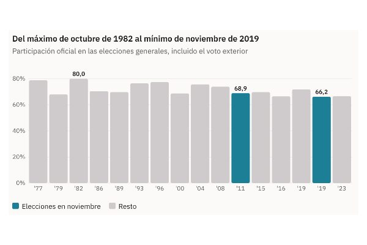
8 de octubre de 2026 · EspañaEl 29N repite mes con mal recuerdo: el último noviembre dejó la participación más baja de la democraciaEl 10N de 2019 dejó un 66,2 % de participación, el mínimo desde 1977; el máximo, 80,0 %, también fue en otoño, en octubre de 1982. Entre abril y noviembre de 2019 la participación cayó en el 98 % de las secciones.- 8 de octubre de 2026 · CataluñaCon Puigdemont de candidato, Junts duplica su voto: del 11% en el Congreso al 22% en el ParlamentEn las generales de 2023 Junts sacó en Cataluña el 11,2 % y ganó en 465 secciones. En las autonómicas de 2024, con Puigdemont como candidato, el 21,6 % y 681.470 votos, y ganó en 1.936, aunque votó menos gente.
- 8 de octubre de 2026 · CataluñaSumados, ERC y los comuns habrían sido la lista más votada en 1.431 secciones de Cataluña en 2023; por separado, en 232Rufián quiere ser el candidato de ERC «acompañado de otras fuerzas de izquierdas». En 2023 ERC sacó en Cataluña el 13,2 %, casi la mitad que en 2019. Con los votos de los comuns sumados sección a sección, el mapa cambia, aunque el PSC sigue por delante.
- 8 de octubre de 2026 · AndalucíaAndalucía vota casi diez puntos más al PSOE cuando elige al Gobierno que cuando elige a la JuntaMontero no irá en las listas del 29N tras el peor resultado del PSOE en unas andaluzas, el 22,7 % de mayo. En las generales de 2023 el PSOE andaluz sacó el 33,5 %. Lo que sí ha perdido es el mapa: en 2004 ganaba en tres de cada cuatro secciones; en 2023, en menos de la mitad.
Vivienda y voto
- 8 de octubre de 2026 · EspañaDespués de Maricarmen: los barrios de inquilinos votan diez puntos menosEn el 10 % de secciones con más hogares de alquiler votó el 64,6 % en 2023; en el 10 % con menos, el 74,1 %. Entre los barrios más pobres, la distancia llega a 16 puntos.
- 8 de octubre de 2026 · 25 ciudadesSin excepción: en las 25 mayores ciudades de España, los barrios de alquiler votan menosEn las 25 ciudades con más electores, el 20 % de secciones con más alquiler votó menos en 2023 que el 20 % con menos. En Alicante, 15 puntos menos; en Vigo, 1,9.
- 8 de octubre de 2026 · Grandes ciudadesLos barrios de pisos turísticos de Barcelona han perdido uno de cada diez electores desde 2015En las 25 mayores ciudades, las secciones con un 5 % o más de pisos turísticos perdieron el 2,9 % de sus electores entre 2015 y 2023, frente al 1,0 % de las que apenas tienen. En Barcelona, el 10,6 %.
- 8 de octubre de 2026 · España sin CataluñaEl PSOE sube en los barrios de alquiler casi el triple que en los de propietarios desde 2015Fuera de Cataluña, en el 10 % de secciones con más alquiler el PSOE pasó del 19,6 % en 2015 al 31,0 % en 2023 (+11,4); en las de menos alquiler, del 29,5 % al 33,5 % (+4,0). El espacio a su izquierda cayó allí del 27,0 % al 14,4 %.
- 8 de octubre de 2026 · 703 municipiosEl alquiler sube un 29% en València desde 2015, pero el voto apenas lo reflejaEntre 2015 y 2023 el alquiler subió un 18,7 % en España según el INE: un 28,9 % en València, un 26,1 % en Málaga y un 26,0 % en Palma. Donde más subió, la participación cayó algo más y el PSOE creció algo más, pero dentro de cada provincia la relación casi desaparece.
Historia electoral
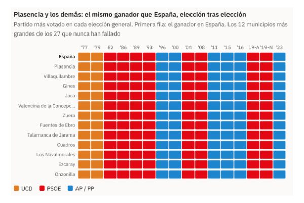
8 de octubre de 2026 · España16 de 16: Plasencia ha votado al ganador en todas las elecciones generales desde 1977Solo 27 de 7.870 municipios con datos completos han votado como primera fuerza al ganador de España en las 16 generales desde 1977. El mayor es Plasencia (32.589 electores); 14 están en Aragón. Antes del 23J eran 46.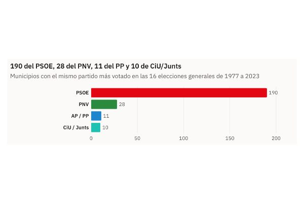
8 de octubre de 2026 · EspañaDos Hermanas ha votado al PSOE en las 16 generales; solo 11 pueblos, ninguno grande, lo han hecho con el PP239 municipios han tenido el mismo ganador en las 16 generales desde 1977: 190 el PSOE (Dos Hermanas, 107.888 electores, es el mayor), 28 el PNV, 11 AP/PP y 10 CiU/Junts. El mayor del PP es Vilalba (11.676).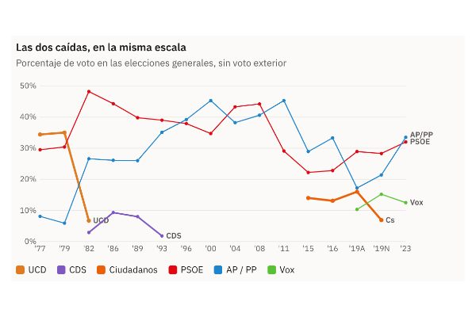
8 de octubre de 2026 · EspañaDe 5.990 municipios a 762 en tres años: así se hundió UCD, y así cayó Ciudadanos en solo seis mesesUCD fue la lista más votada en 5.990 municipios en 1979 y en 762 en 1982, cuando cayó del 35,0 % al 6,7 %. Ciudadanos pasó de 115 municipios y el 16,0 % en abril de 2019 a 5 y el 6,9 % en noviembre.- 8 de octubre de 2026 · EspañaDonde se votaba a UCD y AP en 1977 se vota a PP y Vox en 2023; el mapa de Vox no se parece al de APEn los municipios de más de 5.000 electores, el voto a UCD + AP en 1977 y a PP + Vox en 2023 tiene una correlación de 0,59. La de AP en 1977 con Vox en 2023 es de 0,03.
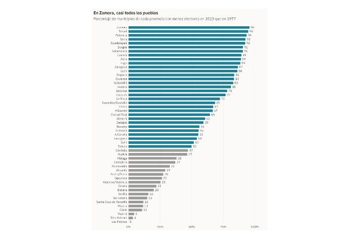
8 de octubre de 2026 · España6 de cada 10 municipios tienen menos electores que en 1977; Las Rozas tiene 14 veces más4.157 de 6.457 municipios comparables (el 64 %) tienen menos electores que en 1977 y han perdido 1,3 millones. En Zamora le pasa al 95,7 % de los pueblos. Las Rozas ha pasado de 4.878 a 70.249.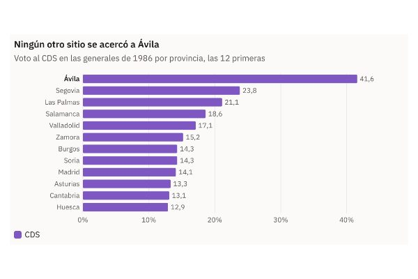
8 de octubre de 2026 · ÁvilaÁvila dio a Suárez el 46 % en 1986, cuando su partido sacaba el 9 % en EspañaEl CDS de Adolfo Suárez sacó en 1986 el 9,3 % en España, el 41,6 % en la provincia de Ávila y el 46,0 % en la capital. La segunda provincia fue Segovia, con el 23,8 %.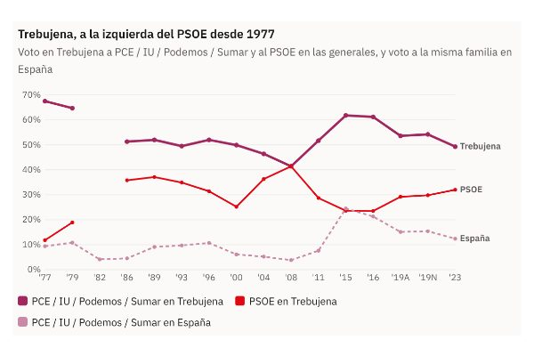
8 de octubre de 2026 · Trebujena (Cádiz)Trebujena dio al PCE dos de cada tres votos en 1977 y aún da a Sumar uno de cada dosEl PCE sacó el 67,5 % en Trebujena (Cádiz) en 1977, su mejor resultado. Su familia política no ha bajado del 41 % allí desde entonces y en 2023 Sumar sacó el 49,3 %, cuatro veces su media.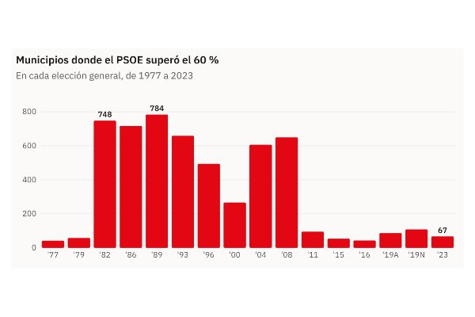
8 de octubre de 2026 · EspañaEn 1982 el PSOE pasaba del 60 % en al menos 748 municipios; en 2023, en 67El PSOE superó el 60 % en al menos 748 municipios en 1982 (máximo: 784 en 1989) y en 67 en 2023. En Estepona pasó del 68,3 % al 25,8 %; en Chiclana, del 72,5 % al 30,1 %.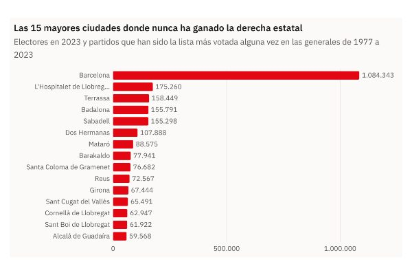
8 de octubre de 2026 · EspañaBarcelona, Terrassa o Dos Hermanas: 864 municipios donde la derecha estatal nunca ha ganado unas generalesEn 864 municipios con 6,5 millones de electores nunca ha sido la lista más votada UCD, AP/PP, CDS, Ciudadanos ni Vox en 16 generales. La mayor es Barcelona; fuera de Cataluña y el País Vasco, Dos Hermanas.- 8 de octubre de 2026 · EspañaPozuelo, Getxo o Ávila: 1.932 municipios donde el PSOE nunca ha ganado unas generalesEn 1.932 municipios con 1,7 millones de electores, ni el PSOE ni la izquierda estatal han sido nunca la lista más votada en 16 generales. Los mayores: Pozuelo, Getxo y Ávila. Burgos aporta 170 pueblos.
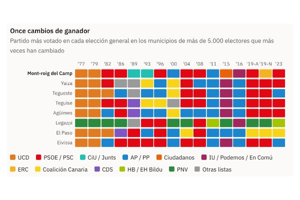
8 de octubre de 2026 · Mont-roig del Camp (Tarragona)Siete partidos distintos han ganado en Mont-roig del Camp: ha cambiado 11 veces de ganador en 16 generalesMont-roig del Camp (Tarragona) ha cambiado 11 veces de ganador en 16 generales, con siete partidos distintos: UCD, PSC, CiU, PP, Cs, En Comú y ERC. La media de los municipios de más de 5.000 electores es 4,4.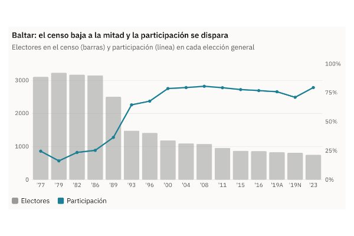
8 de octubre de 2026 · Ourense y LugoEn Baltar votó el 16 % en 1979; hoy vota el 79 %. La participación imposible del interior gallegoEn Baltar (Ourense) votó el 16,2 % en 1979. Su censo pasó de 3.152 electores en 1986 a 1.477 en 1993 y la participación, del 25 % al 65 %. Ourense entera votó el 41,6 % en 1979.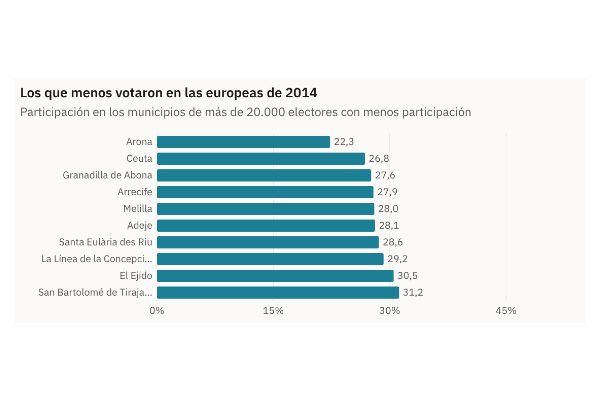
8 de octubre de 2026 · Canarias, Ceuta y MelillaEn Arona votó uno de cada cinco electores en las europeas de 2014En las europeas de 2014 votó el 22,3 % en Arona, el mínimo entre los municipios de más de 20.000 electores, frente al 45,8 % de España. En las generales de 2015 Arona votó el 53,5 %, también muy por debajo de la media.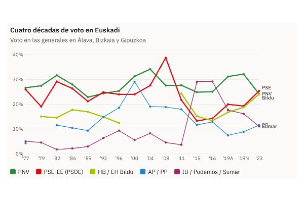
8 de octubre de 2026 · País VascoTres partidos en 1,3 puntos: el empate a tres de Euskadi en 2023 no tiene precedentesEn las generales de 2023, PSE (25,4 %), PNV (24,2 %) y EH Bildu (24,1 %) quedaron en 1,3 puntos en el País Vasco, la menor distancia entre tres partidos desde 1977. EH Bildu ganó en 140 municipios; el PSE, en 29.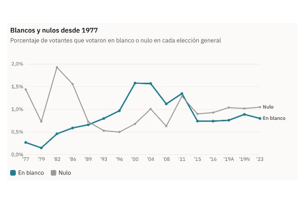
8 de octubre de 2026 · EspañaEl voto en blanco se multiplicó por seis entre 1977 y 2000, y desde entonces se ha reducido a la mitadEl voto en blanco pasó del 0,27 % de los votantes en 1977 al 1,58 % en 2000 y a 406.496 papeletas en 2004. En 2023 fue el 0,80 %. El nulo tuvo su máximo en 1982 (1,93 %).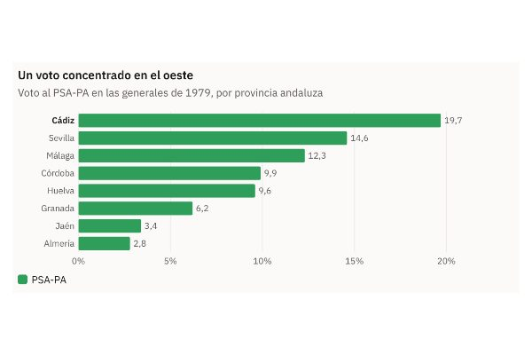
8 de octubre de 2026 · AndalucíaAntes de Teruel Existe: los cinco diputados andalucistas de 1979 y el 19,7 % de CádizEl PSA-PA sacó en 1979 325.842 votos y cinco diputados, con el 19,7 % en Cádiz y más del 30 % en Jerez y San Fernando. En 1982 bajó a 89.025 votos y se quedó sin escaños.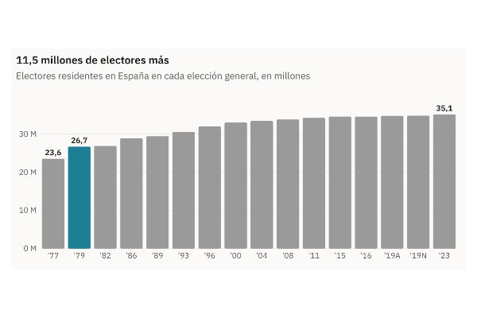
8 de octubre de 2026 · EspañaDe 23,6 a 35,1 millones: el censo electoral ha crecido un 49 % desde 1977El censo de residentes en España pasó de 23,6 millones en 1977 a 35,1 en 2023, un 49 % más. El mayor salto, 3,2 millones, llegó en 1979, tras rebajarse la mayoría de edad a los 18 años en noviembre de 1978.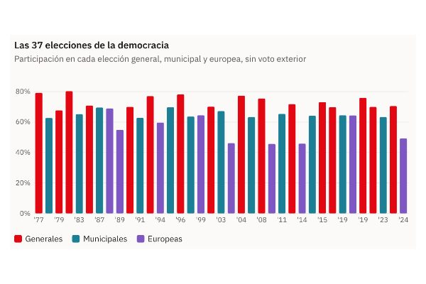
8 de octubre de 2026 · EspañaLas europeas solo superan el 60 % de participación cuando coinciden con las municipalesLas europeas pasaron del 60 % de participación solo en 1987, 1999 y 2019, las tres el mismo día que las municipales. Solas, en 2004, 2009, 2014 y 2024, se quedaron entre el 45,6 % y el 49,2 %.